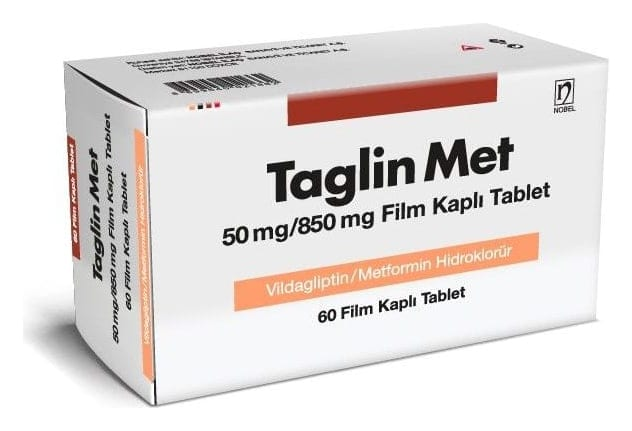

Taglin Met 50 mg/850 mg Film Kaplı Tablet, 60 ADET

Ne için kullanılır
KT · Bölüm 1TAGLİN MET, 60, 120 ve 180 film kaplı tablet içeren blister ambalajda takdim edilmektedir.
Her bir film kaplı tablet 50 mg vildagliptin ve 850 mg metformin hidroklorür içerir.
Bu maddelerin ikisi de ‘oral antidiyabetikler’ adını taşıyan bir ilaç grubuna dahildir.
TAGLİN MET, tip 2 diyabetin tedavisinde kullanılan bir ilaçtır. Kan şekeri düzeyini kontrol etmeye yardımcı olur.
TAGLİN MET, Tip 2 diyabetin diyet ve egzersiz yoluyla kontrol edilemediği durumlarda, tek başına ve/veya diyabetin tedavisine yönelik diğer ilaçlarla birlikte (insülin ya da sülfonilüreler), kullanılır.
Vücut yeterli miktarda insülin üretemiyorsa ya da vücudun ürettiği insülin işlevini gerektiği şekilde yerine getiremiyorsa Tip 2 diyabet gelişir. Vücudun çok fazla glukagon ürettiği durumlarda da Tip 2 diyabet gelişebilir.
İnsülin, özellikle yemeklerden sonra kandaki şeker düzeyinin düşürülmesine yardımcı olan bir Bu ilacı kullanmaya başlamadan önce bu KULLANMA TALİMATINI dikkatlice okuyunuz, çünkü sizin için önemli bilgiler içermektedir. • Bu kullanma talimatını saklayınız. Daha sonra tekrar okumaya ihtiyaç duyabilirsiniz. • Eğer ilave sorularınız olursa, lütfen doktorunuza veya eczacınıza danışınız. • Bu ilaç kişisel olarak sizin için reçete edilmiştir, başkalarına vermeyiniz. • Bu ilacın kullanımı sırasında doktora veya hastaneye gittiğinizde bu ilacı kullandığınızı doktorunuza söyleyiniz. • Bu talimatta yazılanlara aynen uyunuz. İlaç hakkında size önerilen dozun dışında yüksek veya düşük doz kullanmayınız.
maddedir. Glukagon, karaciğerde şeker üretimini tetikleyerek kan şekeri düzeyinin yükselmesine neden olan bir maddedir. Bu maddelerin ikisi de pankreas tarafından üretilir.
TAGLİN MET, pankreasın daha fazla insülin ve daha az glukagon üretmesini sağlayarak (vildagliptinin etkisi) ve vücudun ürettiği insülini daha iyi kullanmasına yardımcı olarak (metformin hidroklorürün etkisi) etki eder. TAGLİN MET, kan şekeri düzeyinin kontrolüne yardımcı olur.
TAGLİN MET tedavisi görürken, size tavsiye edilmiş olan diyete ve/veya egzersize uymaya devam etmeniz önemlidir.